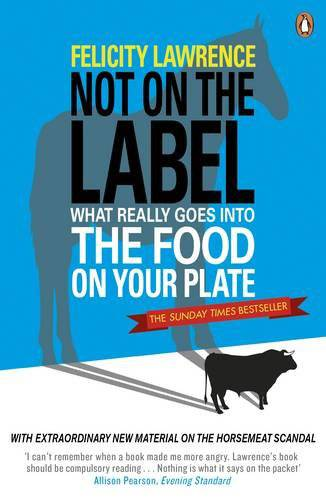
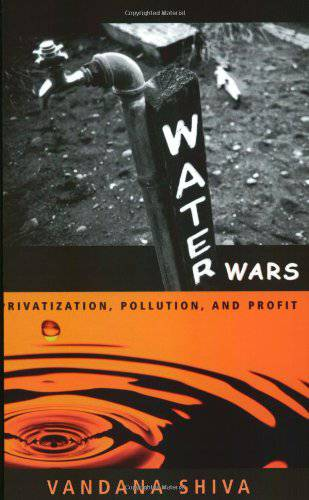
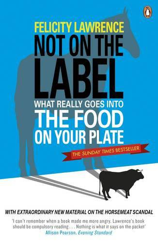
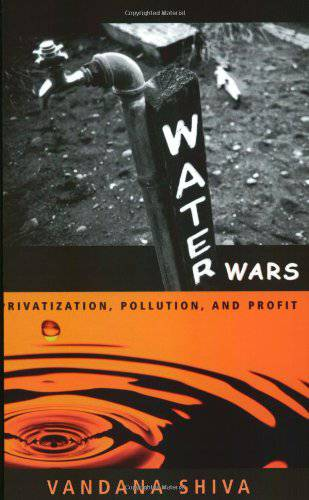

Did you Know?
An average family in the west throws away around 20-40 kgs of food packaging waste every month.
It takes 5,000 litres of water to make 1kg of cheese, 20,000 litres to grow 1kg of coffee, and 100,000 litres to produce 1kg of hamburger beef.
The food industry annually spends over £10.5 billion on chemicals to add to food and alter it.
A third of all fruit and vegetables we eat contain pesticide residues
Avocados contain a special kind of sugar that helps prevent low blood sugar, so may be the ideal diet food.
Source: John Farndon
Why Eat Organic?
For Health - On average, organic fruit and vegetables contain higher levels of vitamin C, essential minerals and cancer-fighting antioxidants.
No Nasty Additives - Amongst the many additives banned by the Soil Association are hydrogenated fat, aspartame (artificial sweetener) and monosodium glutamate (MSG).
Avoids Pesticides - Over 400 chemical pesticides are rountinely used in conventional farming. Pesticides are often present in non-organic food.
Care for Animals - No system of farming has higher levels of animal welfare standards than organic farms working to Soil Association standards.
Good for Wildlife and the Environment - Organic farming is better for wildlife, causes lower pollution from sprays and produces less carbon dioxide - the main global warming gas.
"Food is steeped in oil. About 400 gallons of diesel are needed to produce the average American's food annually, and a similar figure holds here. Most of our food is produced using nitrogen fertiliser, the 'wonder chemical' enabling non-organic farmers to maximise the productivity of their fields. But such chemical fertility doesn't come free. Each one tonne of fertiliser takes one tonne of oil and 108 tonnes of water to make, giving off seven tonnes of carbon dioxide in the process. If farming is to become climate-friendly, it must rely less on fossil fuels. That means fewer chemical fertilisers, more use of rotations and natural fertility-buliding crops like clover"
Organic or not Organic:
- It is important to remember that all fruits, should be sub ripened and grown organically. The same rule should be applied for vegetables, grains and the way farm animals are raised.
- The sooner the produce is utilized after harvest, the more alive and nutritious it is. Therefore, sprouts and grasses, which can be grown all year round in any climate and homes, are so beneficial.
- Good food is dependent upon healthy soil. Just as certain bacteria in our intestines are necessary for the proper digestion and assimilation of food, so plants need certain bacteria to enable them to flourish.
- Soil that is extensively treated with chemicals becomes so depleted of enzymes and nutrients, that the resulting produce lacks vitamins and minerals, which is then often compensated for by more chemical injection. Unfortunately, the conventional method of growing produce today is dependent upon chemicals: to fertilize the soil, to control pests and diseases, to enhance growth and appearance and to prolong the shelf-life of produce.
- Unfortunately, every chemical that has been used on plants or animals will be there when we eat it, and they can’t be washed away with water. Plants and animals, like us, absorb everything that has been given to or used on them during their lifetime. More disturbing is the fact that our body must cope with the toxic residues that becomes part of our food.
- These types of toxins are not easily eliminated by our gastrointestinal systems. They build up over time and attack our immune system, leaving us susceptible to allergies, diseases and degeneration. Today, more and more people need to take vitamin and mineral supplements in order to replace what is not present in the food we eat, so called ‘empty food’.
The Alphabet of Food Additives:
- Acidity regulators, used to alter and control the acidity or alkalinity levels for different desired effects, which can include preservation, added/altered tartness, colour retention and to assist raising agents.
- Acids, used to control to what degree other substances function and/or to impart a sharp taste. Assists in the release of carbon dioxide in raising agents and can have a preservative effect.
- Anti-caking agents, used to ensure the free flow in products such as dried milks, icing sugar and table salt.
- Anti-foaming agents, used to reduce or prevent foaming (frothing) on boiling and to reduce scum forming.
- Antioxidants, used to protect food against deterioration caused by exposure to air (oxidation), such as fat rancidity, flavour deterioration or colour changes.
- Bleaching agents, used to artificially whiten flour.
- Buffers, see acidity regulators.
- Bulking agents, used to increase volume without significantly adding to the energy levels of the food. Normally used in diet foods but can also be used to pad out expensive ingredients. Not usually digested and acts as a source of dietary fiber (roughage).
- Carriers and carrier solvents, used to modify a food additive (by dissolving, diluting or dispersing etc.), without changing its function, to enable easier use or handling.
- Colours, used to restore or reinforce colour lost during processing or storage, to give colour to foods which otherwise would be virtually colourless (such as soft drinks) and to ensure uniformity from batch to batch.
- Emulsifiers, used to aid in the formation and maintenance of the dispersion of two or more substances, which would normally separate and not normally mix, such as oil and water. Milk, mayonnaise and salad dressings are typical oil in water emulsions, butter and margarine water in oil emulsions.
- Emulsifying salts, used to disperse protein so reducing the stringiness in cooked cheese.
- Firming agents, used to make or retain firmness or crispness in fruit and vegetables and to strengthen gels.
- Flavour enhancers, used to enhance or bring out the flavour and/or odours in foods without imparting a distinctive flavour of their own.
- Flavours, there are around 4,000 flavours and they are used for the same reasons for flavour as colourings are for colour, to restore, reinforce, add what is not there and to ensure batch uniformity. They are not presently subject to the 'E Number' system nor are they required to be separately shown on food labels. About labels and flavour, note that 'xx flavour' means just what it says, the product does not need to contain any xx, just taste as though it does. However, 'xx flavoured' on the label means that the product must contain xx. The 'ed' makes all the difference.
- Flour improvers, used to enhance the elastic properties and aid the development of dough. Also accelerates the effect of bleaching agents.
- Foaming agents, used to provide a uniform dispersion of gas in a food.
- Gelling agents, used to form a jelly to provide texture to a product.
- Glazing agents, used to produce a protective coating or to impart a polish/sheen on the surface of a food such as confectionery or citrus fruit.
- Humectants, used to retain moisture in foods by absorbing water from the air to prevent drying out.
- Modified starch, used for various functions including adding texture, adding bulk, stabilizing and as a thickener.
- Packaging gases, used to replace air in the packaging of foodstuffs susceptible to oxidation Not necessarily shown on food labels.
- Preservatives, used to extend the shelf life of products by preventing the growth of micro-organisms, which could otherwise cause food decay and, in some cases, food poisoning.
- Propellants, a gas or volatile liquid used to expel foodstuffs from aerosols.
- Raising agents, used to increase the volume of doughs and batters by promoting gas release (aeration).
- Releasing agents, used to prevent foodstuffs sticking to machinery, molds, packaging etc. but not necessarily shown on food labels even though some may remain in the food.
- Sequestrants, used to combine with trace metals in the environment to render them inactive.
- Stabilisers, used to maintain the physical state of a food and to stabilize, retain or intensify the existing colour of a food, particularly emulsions, and therefore often used with emulsifiers.
- Sweeteners:
- Intense sweeteners: they have a sweetness many times that of sugar and are therefore used at very low levels. They are used in products such as diet foods, soft drinks and tabletop sweeteners.
- Bulk sweeteners: they have a similar sweetness to sugar and are used at comparable levels. Unlike intense sweeteners they also provide bulk (although their main function is to provide sweetness). They are used in products such as sugar-free confectionery and foods for diabetics.
- Thickeners, used to increase viscosity, modify texture and impart stability.
Recommended Viewing:
For more informational videos on food & health, nutrition, the environment, climate
change and social justice,
please visit our YouTube Channel.
Recommended Reading:
 


